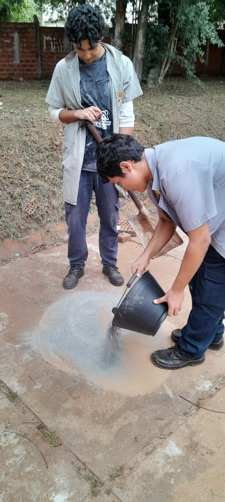
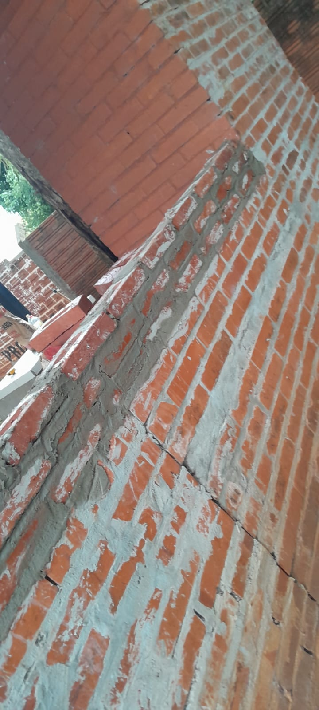

Colegio Técnico Nacional
Especialidad en Construcciones Civiles
Formando profesionales para el futuro de la infraestructura paraguaya.
Contenidos
Conocé todo lo que ofrecemos para tu formación y desarrollo profesional.

Primer Año
Proyecto y dibujo técnico
Taller e instalaciones
Laboratorio y materiales
Técnica instrumental

Segundo Año
Estabilidad y resistencia de materiales
Topografía
Proyecto y dibujo técnico
Taller e instalaciones
Técnica instrumental
Laboratorio y materiales

Tercer Año
Proyecto y dibujo técnico
Estabilidad y resistencia de los materiales
Taller e instalaciones
Laboratorio y materiales
Técnica instrumental
Taller
Aprendizaje práctico y teórico de una obra: elaboración de mortero con su dosificación correspondiente, levantamiento de muros, nivelación de suelos y revoques.

Instalaciones
Parte teórica y práctica sobre instalaciones de agua, eléctricas, de desagüe y pluviales, además del montaje de tanques para edificios.

Proyecto y Dibujo Técnico
Lectura e interpretación de planos, elaboración de maquetas y planos técnicos, y desarrollo de dibujos a mano alzada.
Estabilidad y Resistencia de los Materiales
Estudio y aplicación de cálculos estructurales para edificaciones, considerando cargas, tensiones y materiales utilizados.
Topografía
Aprendizaje de nivelación de terrenos y uso de instrumentos como el teodolito para levantamientos topográficos precisos.

Laboratorio y Materiales
Estudio teórico y práctico de los materiales de construcción, su comportamiento y su uso en la elaboración de mezclas y morteros.

Técnica Instrumental
Desarrollo de cálculos de materiales, cómputo y presupuesto, siguiendo normas técnicas aplicadas a la construcción.
Quiénes somos
En el Departamento de Construcciones Civiles del Colegio Técnico Nacional (CTN) de Encarnación, formamos profesionales altamente capacitados para los desafíos del sector de la construcción. Combinamos teoría, práctica e innovación para brindar una educación técnica de excelencia.
Nuestra Misión
Brindar una educación técnica que prepare a los estudiantes para diseñar, construir y gestionar proyectos de infraestructura con seguridad, sostenibilidad e innovación.
Nuestros Valores
✔ Compromiso con la calidad ✔ Innovación y creatividad ✔ Trabajo en equipo ✔ Responsabilidad social ✔ Sostenibilidad ambiental
Nuestro Equipo
Contamos con docentes experimentados, tanto en el ámbito académico como profesional, y una estrecha colaboración con empresas del sector para ofrecer una formación actualizada y práctica.
Referencias
Estos son algunos de nuestros proyectos y actividades destacadas.
 

Contacto
📍 Dirección: M4Q4+98V, Encarnación 070115, Paraguay
📞 Teléfonos: +595 992 947167 | +595 992 324998
✉ Correo: escuelaempresactnycev@gmail.com